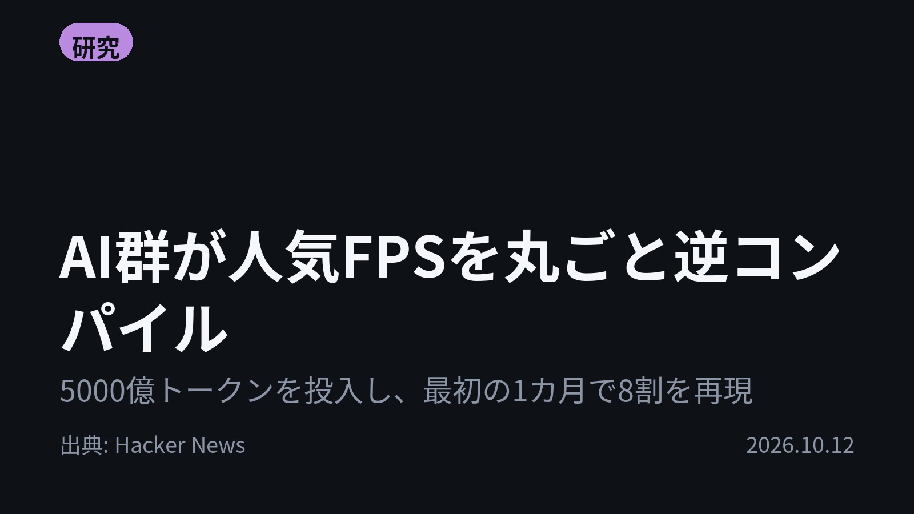
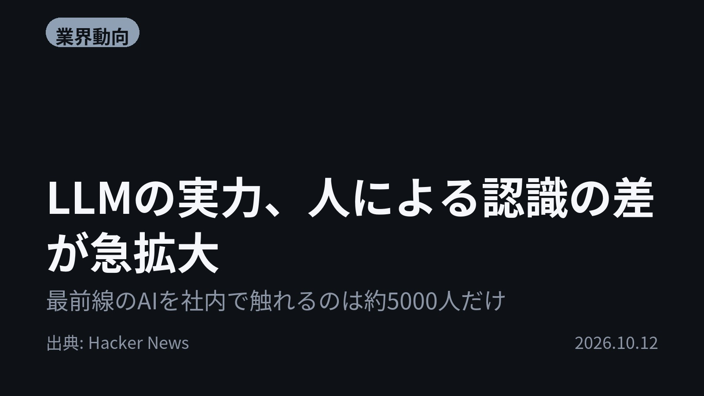
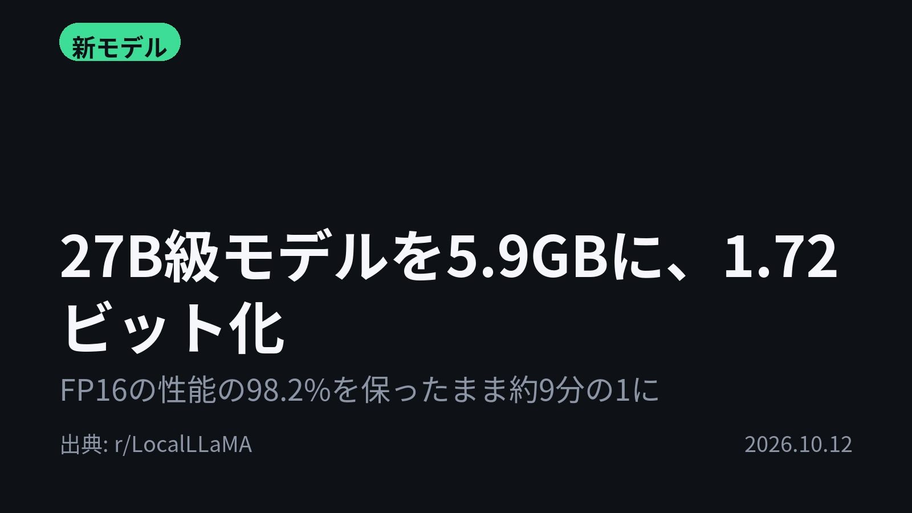
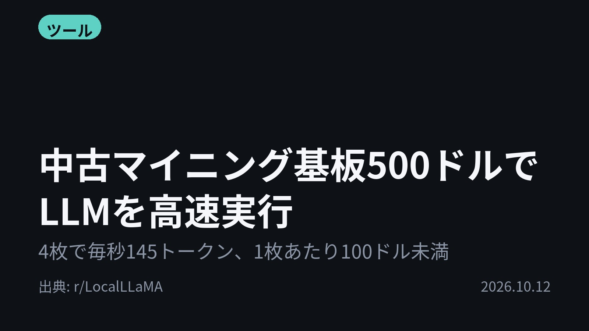
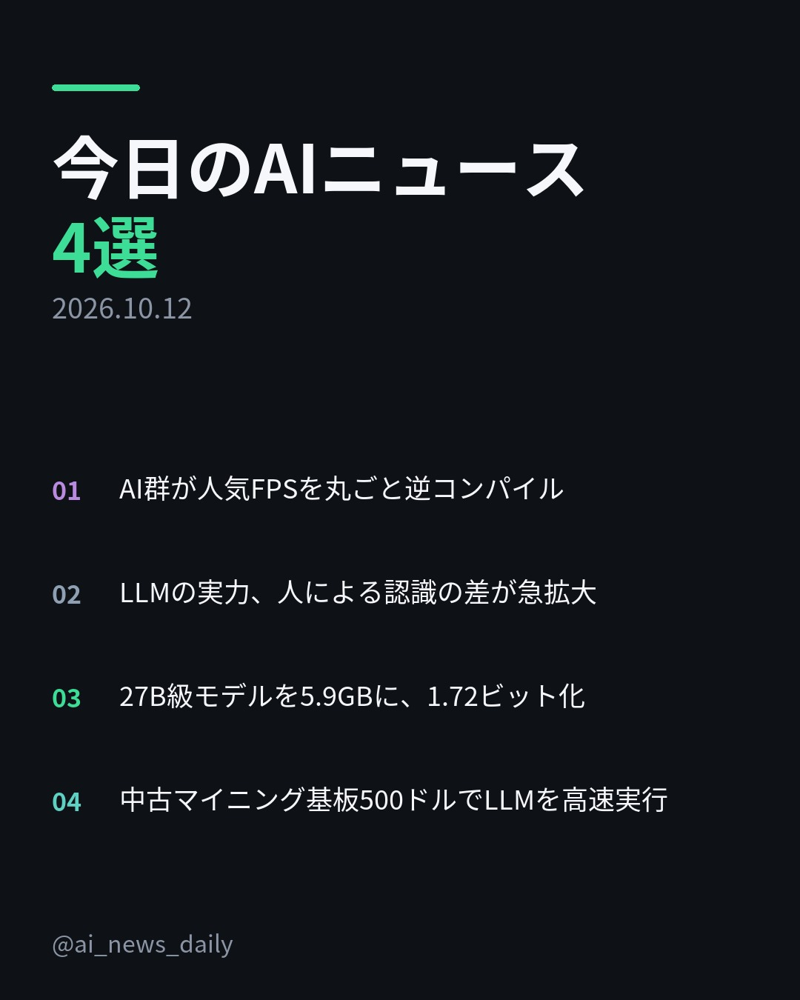
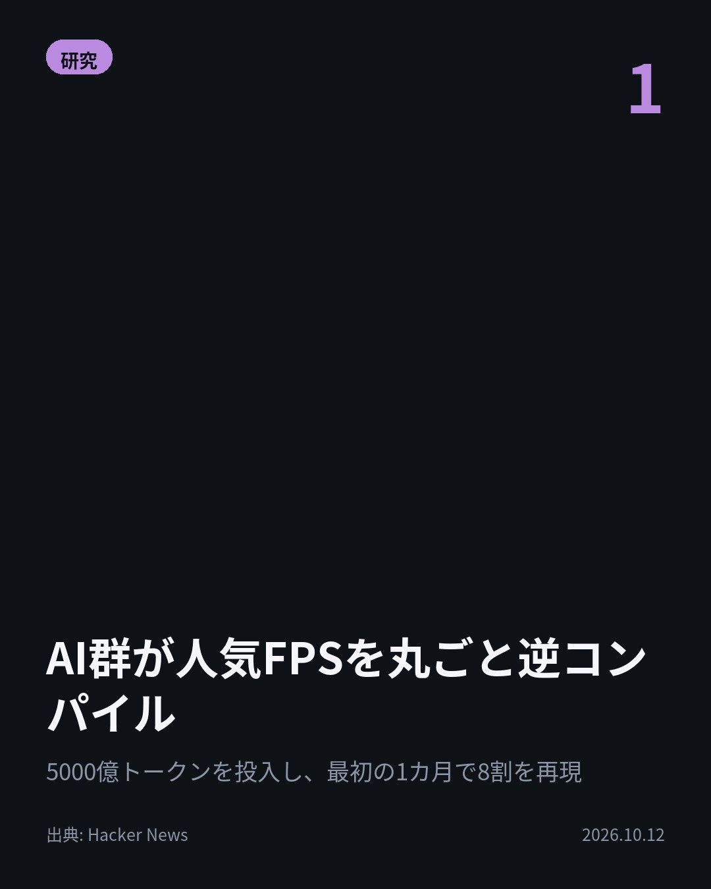
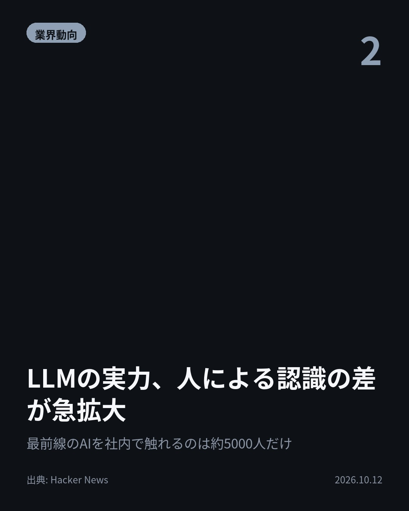
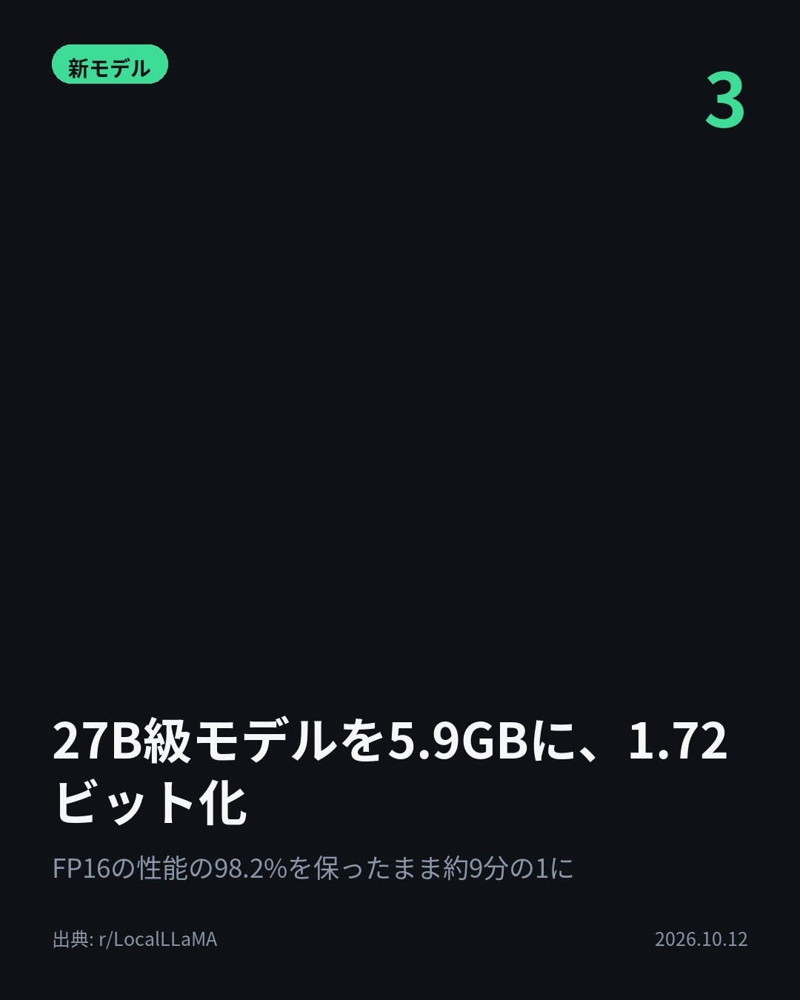
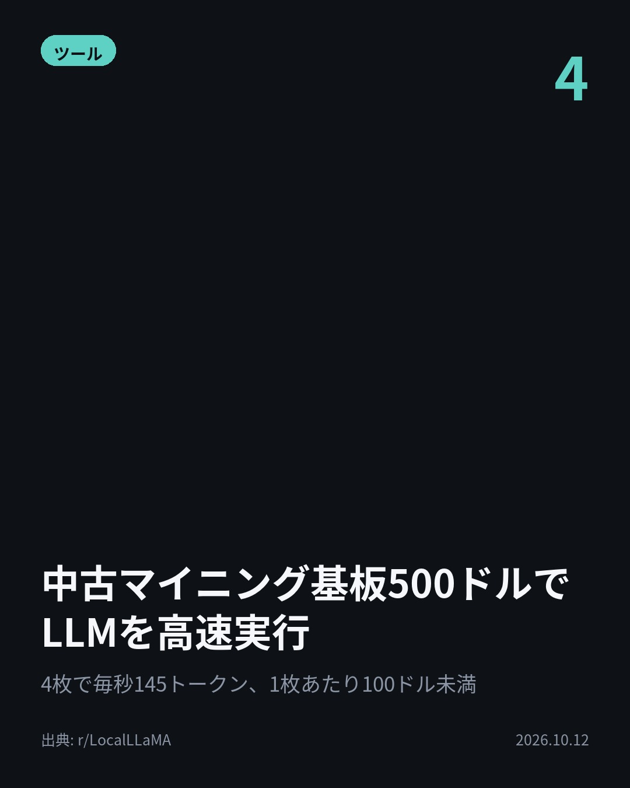

今日のAIニュース 下書き
2026-10-12 生成 10/12 08:40
⚠ ファクト照合で要確認の項目があります。
各ニュースの警告を確認してから投稿してください。
X（4投稿）
AI群が人気FPSを丸ごと逆コンパイル
原題: 500B tokens later: Letting AI agents decompile a first-person shooter

5000億トークンで、AIが人気FPSを逆コンパイル。 最初の1カ月、作業役3体と査読役1体で約8割を再現。ゲーム起動やマップ読込まで到達した。 文脈の圧縮開始を90%から42%に早め、消費を削減。 #AI #ClaudeCode （出典: Hacker News）
重み 215 / 280（見た目 129字）
要確認:
［数値］5000億 — この数値の根拠が本文に見つかりません
［数値］8割 — この数値の根拠が本文に見つかりません
［固有名詞］トークン — この語が本文に見つかりません
［固有名詞］コンパイル — この語が本文に見つかりません
［固有名詞］エージェント — この語が本文に見つかりません
［固有名詞］チャンネル — この語が本文に見つかりません
［固有名詞］Hacker — この語が本文に見つかりません
［固有名詞］News — この語が本文に見つかりません

LLMの実力、人による認識の差が急拡大
原題: The gap in shared understanding of LLM capability is widening

同じAIなのに、見えている景色が違う。 約60億人はLLMにほぼ触れず、10〜20億人は無料版を時々使う程度。 数学やコードで最前線のLLMを使うのは約2000万人、社内の最先端システムに触れるのは約5000人。 #AI #LLM （出典: Hacker News）
重み 219 / 280（見た目 129字）
要確認:
［数値］60億 — この数値の根拠が本文に見つかりません
［数値］2000万 — この数値の根拠が本文に見つかりません
［数値］10 — この数値の根拠が本文に見つかりません
［固有名詞］エージェント — この語が本文に見つかりません
［固有名詞］Hacker — この語が本文に見つかりません
［固有名詞］News — この語が本文に見つかりません

27B級モデルを5.9GBに、1.72ビット化
原題: Now you can grow Bonsai on your potato

27B級の推論モデルが、普通のノートPCに収まる。 約54GBを約5.9GBへ。1重みあたり1.72ビットの三値化で、FP16の性能の98.2%を維持。 Apple M5 Max搭載ノートで毎秒約47トークン。 #生成AI #ローカルLLM （出典: r/LocalLLaMA）
重み 210 / 280（見た目 135字）
要確認:
［固有名詞］トークン — この語が本文に見つかりません
［固有名詞］コーディング — この語が本文に見つかりません
［固有名詞］LocalLLaMA — この語が本文に見つかりません

中古マイニング基板500ドルでLLMを高速実行
原題: Running Next Flash IQ3_XXS at ~70 tok/s with 100k context or 2 instances of Qwen 3.6 35B A3B IQ4 at ~145 tok/s with 256k all on $500 of ex mining BC-250 boards

中古マイニング基板で、LLMはどこまで速く動くか。 1枚100ドル未満で買ったBC-250を4枚接続。 Qwen 3.6 35Bを2つ同時に動かし、開始時は毎秒145トークン。 15万トークン時は毎秒100未満に。 #AI #ローカルLLM （出典: r/LocalLLaMA）
重み 216 / 280（見た目 134字）
要確認:
［数値］15万 — この数値の根拠が本文に見つかりません
［固有名詞］マイニング — この語が本文に見つかりません
［固有名詞］トークン — この語が本文に見つかりません
［固有名詞］イーサネット — この語が本文に見つかりません
［固有名詞］クラスタ — この語が本文に見つかりません
［固有名詞］Qwen — この語が本文に見つかりません
［固有名詞］LocalLLaMA — この語が本文に見つかりません

Instagram（カルーセル 6枚）


1. 表紙


2. ニュース


3. ニュース


4. ニュース


5. ニュース

6. CTA
約54GBのモデルが5.9GBに縮み、性能はFP16の98.2%を維持。 今日は「AIを手元で、長く、大きく動かす」話が4本揃いました。 1. ① Claude CodeとCodexのエージェントが、GitHubのissueで進捗を管理し、Discordの共有チャンネルで互いに連絡しながら逆コンパイルを分担。CIの失敗もDiscordに自動通知されます。一方で、途中で別の関数に移る・確認せずissueを閉じるといった「集中切れ」も記録されています。(Hacker News) 2. ② 筆者は人々を4つの層に分けて説明。最上層の約5000人が見ているのは、数千のエージェントが数週間かけて協働する姿だといいます。差を生む要因として、取り組む課題の規模、得意分野の偏り、無料・有料・社内という利用環境の違いの3つを挙げています。(Hacker News) 3. ③ 埋め込みから出力層まで、言語部分の重みをすべて三値で表現。数学は96.57、コーディングは89.42、ツール呼び出しは74.92のスコアです。262Kトークンの長い文脈を端末上で扱え、llama.cpp（CUDA・Metal・CPU）で動きます。(r/LocalLLaMA) 4. ④ 4枚の基板を2.5Gbのイーサネットでつなぎ、llamaのVulkanとRPCで動作。当初Next Flashは毎秒30トークンでしたが、Claude Codeにクラスタを任せた後は、より良い量子化で毎秒60〜70トークンを維持。消費電力は負荷時に最大900Wで、次は基板ごとの水冷化を予定しています。(r/LocalLLaMA) モデルを縮める工夫、安い基板を束ねる工夫、エージェントを長期間動かす工夫。AIを動かす手段そのものが今日の主役でした。 毎朝4本、数字と出典つきでAIニュースをまとめています。見返せるように保存、続きはフォローでどうぞ。 #AI #生成AI #人工知能 #テクノロジー #AIニュース #ChatGPT #Claude #ClaudeCode #Codex #LLM #ローカルLLM #AI活用 #AIエージェント #逆コンパイル #量子化 #llamacpp #Qwen #BC250 #LocalLLaMA #GenerativeAI #ArtificialIntelligence #TechNews
1003字（Instagram上限 2,200字）
この日の選定理由
AI群が人気FPSを丸ごと逆コンパイル
複数のエージェントがDiscordとGitHubで連携しながら、数カ月にわたって自律的に作業しました。長期の大規模プロジェクトをAIに任せるための実践的な知見が詰まっています。
LLMの実力、人による認識の差が急拡大
無料版のチャットボットしか知らない層と、数週間かかっていた開発をAIに任せる層とでは、AIの見え方がまったく違います。AIの評価が人によって食い違う理由を説明する見方です。
27B級モデルを5.9GBに、1.72ビット化
約54GBあったモデルが普通のノートPCで動くサイズになりました。高性能な推論モデルを手元で使える人が一気に広がる可能性があります。
中古マイニング基板500ドルでLLMを高速実行
高価なGPUがなくても、安い中古基板を組み合わせれば実用的な速度で動かせることを示しました。ローカルAIの敷居を下げる事例です。